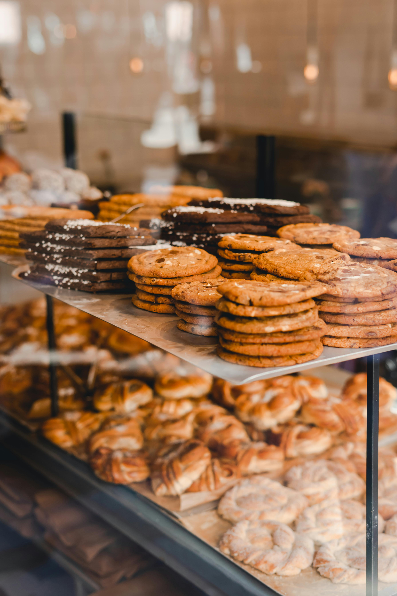

Quem Somos

A Zéro Sucre nasceu da união entre o rigor da confeitaria francesa e a vibração dos sabores brasileiros. Idealizada por Kamille Dubois, filha de franceses, a marca surgiu em 22 de janeiro de 2021 para preencher uma lacuna: oferecer doces sofisticados que não abrissem mão da saúde.
Unindo tradição e inovação, Kamille substituiu o açúcar refinado por um blend de adoçantes naturais (como eritritol e xilitol) e ingredientes nobres, como o chocolate belga. O resultado é uma confeitaria de alta gastronomia, onde o sabor e a sofisticação francesa se mantêm intacto sem receitas que promovem o bem-estar. Para nós, cada doce é um convite ao prazer sem culpas — uma experiência sensorial completa que respeita o seu corpo e celebra a tradição.
Nosso compromisso vai além da dieta; trata-se de um estilo de vida que valoriza a qualidade da matéria-prima e a verdade dos sabores.Cada receita é elaborada para proporcionar um momento de indulgência plena, provando que é possível desfrutar de uma pâtisserie de excelência com leveza e equilíbrio. Na Zéro Sucre, cada mordida é uma celebração à saúde.
Nosso Estabelecimento
Veja no mapa abaixo como nos encontrar.
Nossos Produtos
- Doces Finos e Pâtisserie Francesa
- Bolos de Vitrine
- Chocolates e Doces Gourmet
- Panificação Artesanal (Viennoiserie)
